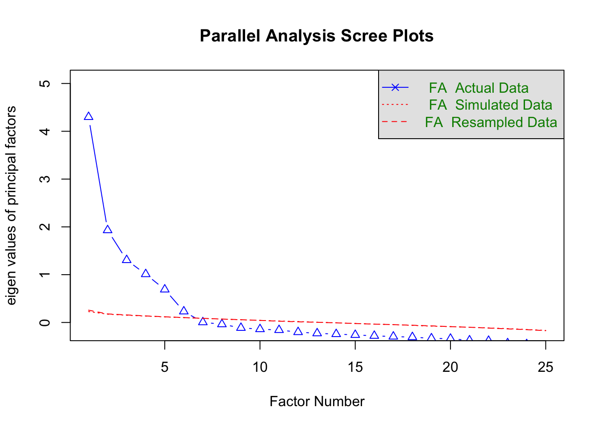

library(tidyverse)19 Faktoranalüüs
See peatükk annab ülevaate, kuidas teha faktoranalüüsi R-is.
Lugemissoovitus
Tooding, L-M. (2014) Faktoranalüüs. . Rootalu, V. Kalmus, A. Masso, ja T. Vihalemm (toim), Sotsiaalse analüüsi meetodite ja metodoloogia õpibaas. https://samm.ut.ee/faktoranalyys/
Note
See peatükk on lõpuni kirjutamata. Täieneb.
Andmetöötluseks kasutan paketti tidyverse (Wickham et al. 2019).
19.1 Faktoranalüüs paketiga psych
library(psych)Analüüsi läbiviimiseks kasutan paketiga psych (William Revelle 2024) kaasatulevat andmestikku bfi ehk Big Five Inventory.
data("bfi")Andmestik sisaldab 2800 inimese vastuseid isiksusetestile (25 tunnust) ning lisaks on kolm tunnust, mis näitavad vastaja sugu, vanust ja haridustaset. Isiksuse testiga mõõdetakse viite üksusele isiksuseomadust (ekstravertsus/extraversion, vastutulelikkus/agreeableness, kohusetundlikkus/conscientiousness, neurootilisus/neuroticism ja avatus/openness). Iga isiksuse omaduse kohta on viis küsimust ja tunnuse nimed algavad vastava tähega E, A, C, N ning O. Iga number andmeväljas näitab, millise hinnangu vastaja andis kuuepallisel Likerti skaalal.
Vajadusel vaata küsimusi lähemalt.
#?bfiFaktoranalüüs on tundlik puuduvate väärtuste osas, seepärast vaatan esmalt kui palju neid on.
sum(is.na(bfi))[1] 731Loe lähemalt, kuidas tulle toime puuduvate väärtustega siit. Praegu on eesmärk teha faktoranalüüsi ja viskan need ilma põhjaliku süvenemiseta lihtsalt välja.
bfi<-bfi|>
drop_na()Pööramismeetodi valik
Pööramismeetodi valik mõjutab faktorite tulemust. Varimax pööramine eeldab, et faktorid on omavahel sõltumatud. Selline mudel on lihtsamini tõlgendatav, sest laadimised on kas kõrged või madalad. Nii eristub faktorid teineteisest paremini.
Faktorite arvu leidmine
Valitud faktorite arv (ja rotatsiooni meetod) mõjutavad analüüsi tulemusi. Kui on liiga vähe faktoreid, siis mudel ei suuda piisavalt hästi andmete mittekülgsust tabada. Kannatab mudeli selgitusvõime, sest tegelikke faktoreid ei suudeta eristada. Kui faktoreid on liiga palju, muutub mudel keeruliseks ja raskesti tõlgendatavaks. Tekib liigne müra, mida võib hakata tõlgendama teguriteks. Seepärast on oluline leida õige faktorite arv.
Käsuga fa.parallel() on võimalik luua nn “küünarnuki kõver”. See kõver näitab, mis hetkest uue faktori lisamine ei suurenda oluliselt mudeli seletusvõimet.
fa.parallel(bfi[,1:25],
fa = "fa")
Parallel analysis suggests that the number of factors = 6 and the number of components = NA Valin andmestikust esimesed 25 tunnust. Pildil tundub kõver kuskile viie ja kuue vahele jäävat. Pane tähele, et joonise all on väljatrükk, mis soovitab kuuest jaotust. Kuna isiksuse omadusi on viis, kasutan edasises analüüsis ka viiest jaotust.
Mudeli loomine
Teen faktoranalüüsi käsuga fa() ja salvestan tulemuse eraldi objekti.
- 1
- Valin veerud 1 kuni 25
- 2
- Määran ära faktorite arvu
- 3
- Kasutan varimax pööramist
Tulemuse väljatrükk sisaldab kahte tabelit. Esimene neist on faktormaatriks, mille kaks esimest tulpa näitavad faktorlaadungeid (korrelatsioonseoseid) tekkinud uute faktorite ja vanade olemasolevate tunnustel vahel.
fa_tulemusFactor Analysis using method = pa
Call: fa(r = bfi[, 1:25], nfactors = 5, rotate = "varimax", fm = "pa")
Standardized loadings (pattern matrix) based upon correlation matrix
PA2 PA1 PA3 PA5 PA4 h2 u2 com
A1 0.11 0.04 0.03 -0.42 -0.09 0.20 0.80 1.3
A2 0.04 0.22 0.14 0.61 0.04 0.44 0.56 1.4
A3 0.01 0.32 0.11 0.64 0.05 0.53 0.47 1.6
A4 -0.06 0.20 0.22 0.43 -0.13 0.30 0.70 2.2
A5 -0.12 0.38 0.09 0.53 0.05 0.46 0.54 2.0
C1 0.02 0.06 0.54 0.03 0.21 0.34 0.66 1.3
C2 0.09 0.02 0.64 0.11 0.10 0.44 0.56 1.2
C3 -0.03 0.03 0.56 0.11 -0.01 0.33 0.67 1.1
C4 0.24 -0.07 -0.63 -0.03 -0.10 0.47 0.53 1.4
C5 0.28 -0.18 -0.56 -0.04 0.04 0.43 0.57 1.7
E1 0.03 -0.57 0.03 -0.12 -0.06 0.34 0.66 1.1
E2 0.24 -0.68 -0.10 -0.11 -0.05 0.55 0.45 1.4
E3 0.02 0.55 0.09 0.26 0.28 0.46 0.54 2.0
E4 -0.12 0.64 0.10 0.32 -0.08 0.54 0.46 1.7
E5 0.04 0.51 0.32 0.09 0.20 0.42 0.58 2.1
N1 0.79 0.08 -0.04 -0.21 -0.08 0.68 0.32 1.2
N2 0.75 0.04 -0.02 -0.19 -0.01 0.61 0.39 1.1
N3 0.73 -0.06 -0.06 -0.02 0.00 0.55 0.45 1.0
N4 0.59 -0.35 -0.18 0.01 0.08 0.51 0.49 1.9
N5 0.54 -0.16 -0.05 0.11 -0.16 0.35 0.65 1.5
O1 -0.01 0.21 0.12 0.05 0.50 0.32 0.68 1.5
O2 0.18 0.00 -0.10 0.10 -0.48 0.28 0.72 1.5
O3 0.03 0.31 0.07 0.12 0.60 0.48 0.52 1.6
O4 0.22 -0.19 -0.04 0.14 0.37 0.24 0.76 2.7
O5 0.08 -0.01 -0.06 -0.02 -0.54 0.31 0.69 1.1
PA2 PA1 PA3 PA5 PA4
SS loadings 2.70 2.49 2.02 1.79 1.54
Proportion Var 0.11 0.10 0.08 0.07 0.06
Cumulative Var 0.11 0.21 0.29 0.36 0.42
Proportion Explained 0.26 0.24 0.19 0.17 0.15
Cumulative Proportion 0.26 0.49 0.68 0.85 1.00
Mean item complexity = 1.5
Test of the hypothesis that 5 factors are sufficient.
df null model = 300 with the objective function = 7.41 with Chi Square = 16484.78
df of the model are 185 and the objective function was 0.63
The root mean square of the residuals (RMSR) is 0.03
The df corrected root mean square of the residuals is 0.04
The harmonic n.obs is 2236 with the empirical chi square 1046.45 with prob < 3.1e-120
The total n.obs was 2236 with Likelihood Chi Square = 1400.57 with prob < 1.5e-185
Tucker Lewis Index of factoring reliability = 0.878
RMSEA index = 0.054 and the 90 % confidence intervals are 0.052 0.057
BIC = -26.23
Fit based upon off diagonal values = 0.98
Measures of factor score adequacy
PA2 PA1 PA3 PA5 PA4
Correlation of (regression) scores with factors 0.92 0.88 0.86 0.84 0.83
Multiple R square of scores with factors 0.85 0.77 0.74 0.70 0.69
Minimum correlation of possible factor scores 0.71 0.54 0.48 0.41 0.38fa_tulemus$loadings
Loadings:
PA2 PA1 PA3 PA5 PA4
A1 0.106 -0.419
A2 0.222 0.137 0.608
A3 0.323 0.112 0.638
A4 0.199 0.223 0.434 -0.134
A5 -0.118 0.385 0.532
C1 0.541 0.205
C2 0.639 0.111 0.102
C3 0.559 0.108
C4 0.244 -0.627
C5 0.284 -0.180 -0.561
E1 -0.566 -0.122
E2 0.238 -0.683 -0.110
E3 0.552 0.256 0.276
E4 -0.119 0.640 0.102 0.323
E5 0.513 0.318 0.204
N1 0.787 -0.209
N2 0.753 -0.192
N3 0.734
N4 0.589 -0.350 -0.178
N5 0.538 -0.157 0.106 -0.160
O1 0.209 0.123 0.504
O2 0.183 -0.102 -0.479
O3 0.311 0.115 0.600
O4 0.222 -0.192 0.144 0.366
O5 -0.545
PA2 PA1 PA3 PA5 PA4
SS loadings 2.705 2.487 2.017 1.794 1.539
Proportion Var 0.108 0.099 0.081 0.072 0.062
Cumulative Var 0.108 0.208 0.288 0.360 0.422plot(fa_tulemus)Mudeli tulemuste visualiseerimine
Analüüsi tulemuste visualiseerimiseks tuleb kasutada käsku fa.diagram().
fa.diagram(fa_tulemus)fa_laadung<-fa_tulemus$scoresbfi<-bind_cols(bfi, as_tibble(fa_laadung))KMO(bfi[,1:25])Kaiser-Meyer-Olkin factor adequacy
Call: KMO(r = bfi[, 1:25])
Overall MSA = 0.85
MSA for each item =
A1 A2 A3 A4 A5 C1 C2 C3 C4 C5 E1 E2 E3 E4 E5 N1
0.74 0.83 0.87 0.87 0.90 0.84 0.79 0.85 0.82 0.86 0.84 0.88 0.89 0.88 0.89 0.78
N2 N3 N4 N5 O1 O2 O3 O4 O5
0.78 0.86 0.89 0.86 0.86 0.78 0.83 0.78 0.76